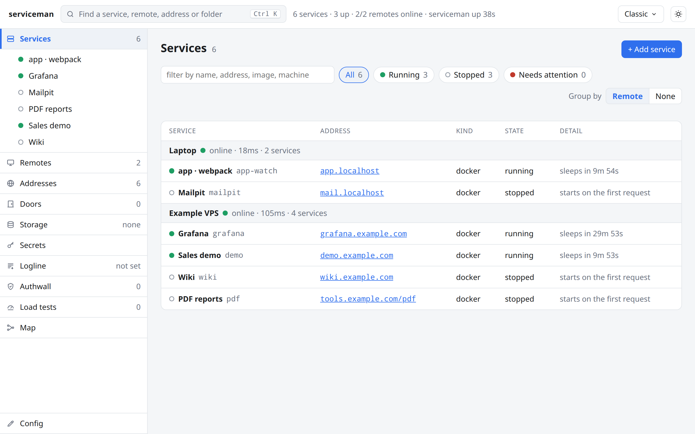
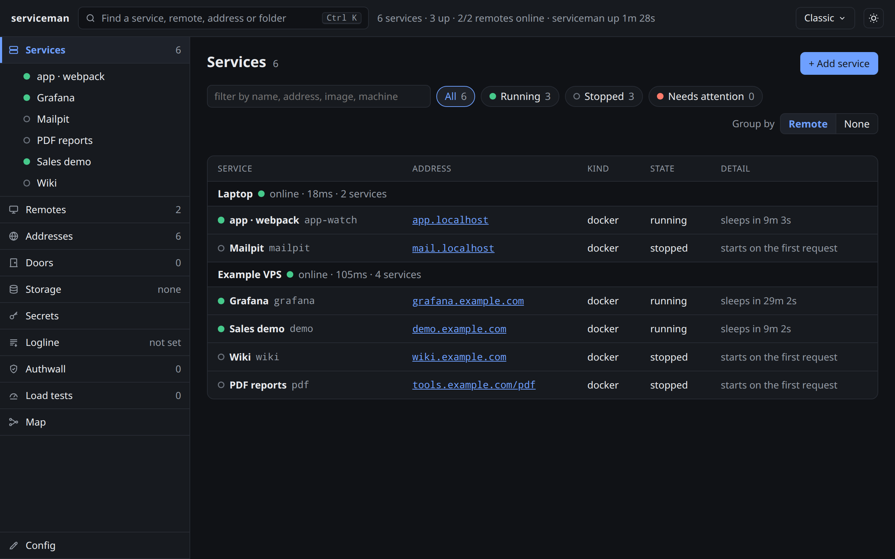

Starts a service on its first request. Stops it when nobody visits.
serviceman answers on the hostnames you give it. When a request arrives for a service that is asleep, it starts it (a docker image or a program, here or on a machine of yours), waits until it answers, and passes the request on. You write one config file; the hostnames do the rest.
What it serves
dockerA docker image. The agent runs it on a port docker picks, and stops it when it is idle.shellA program on a machine of yours. The agent runs it, keeps it alive, and stops it with its group.externalSomething already running. Never started or stopped: an address, and a proxy.A docker or shell service runs on a machine with the agent: the box beside serviceman, or a VPS across the world, dialled in over one link. serviceman itself runs nothing but the doors. See Remotes.
One file
Every service is a few lines of serviceman.json: what runs, where, on which hostname, and when it sleeps.
{
"listen": {"host": "127.0.0.1", "port": 8080},
"control": {"host": "serviceman.localhost", "port": 8081},
"remotes": [
{"name": "vps1", "token": "replace-me-with-openssl-rand-hex-32"}
],
"services": [
{
"name": "grafana",
"type": "docker",
"remote": "vps1",
"image": "grafana/grafana:latest",
"publish": {"host": "grafana.example.com", "port": 3000},
"policy": {"start": "on_demand", "stop_after_idle": "10m"}
}
]
}Every field is in Config; whole setups to copy are in Use cases.
Run it
git clone https://github.com/vbarbarosh/serviceman
cd serviceman
bin/configure
bin/runbin/configure installs the packages, builds the image and writes a starting data/serviceman.json; bin/run runs the image with it. Open http://serviceman.localhost:3001 for the control page, add a machine and a service there or in the file, then visit the service's hostname. Going live (DNS, port 80, TLS, systemd) is in Deploy.
The control page


What it is not
- Not a load balancer for one big app. It is a door for many small ones.
- Not a TLS terminator. Put caddy or nginx in front and keep the
Hostheader. - Not a container builder. Images are pulled and run, never built.
- Not a scheduler. A service runs where you put it; nothing moves on its own.
Docs
Tutorials
Modules
Parts of the control page that stand on their own: a page half, a server half, and a host that gives them what they reach. serviceman is the first host of each.